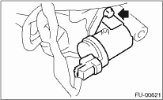
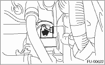

1. Release the fuel pressure. 
2. Disconnect the ground cable from the battery.

3. Open the fuel filler flap lid, and remove the fuel filler cap.
4. Remove the collector cover.
5. Remove the intake manifold.
6. Disconnect the connector from tumble generator valve actuator.
7. Remove the tumble generator valve actuator.

1. Release the fuel pressure.
2. Disconnect the ground cable from the battery.
3. Open the fuel filler flap lid, and remove the fuel filler cap.
4. Remove the collector cover.
5. Remove the secondary air pump.
6. Disconnect the connector from tumble generator valve actuator.
7. Remove the tumble generator valve actuator.
